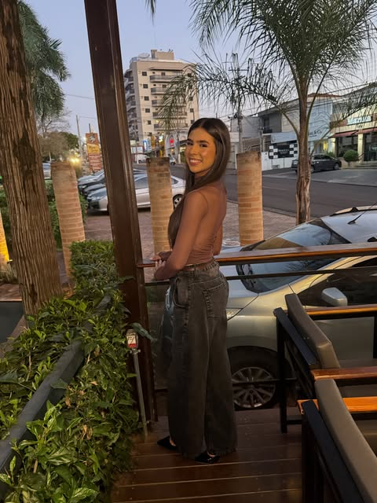
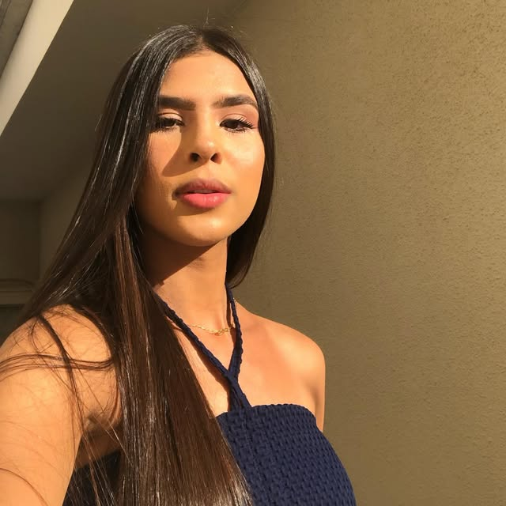

Diário pessoal
Fé, rotina e os pequenos dias que valem a pena.
Um cantinho para guardar o que o feed não comporta: o que tenho aprendido com Deus, os looks do dia a dia, os lugares e as pessoas que fazem a vida mais bonita.

Tendo Cristo, temos tudo.— o lema deste diário
Últimos textos

Fé
Tendo Cristo, temos tudo: o que essa frase mudou em mim
Demorei para entender que "tudo" não é ter tudo resolvido. É saber de quem eu sou mesmo nos dias em que nada se resolve.
Ler o textoOi, eu sou a Stefany.
Cristã, apaixonada por um bom fim de tarde e por roupa confortável que ainda fica bonita. Aqui escrevo sobre o que Deus tem feito na minha vida e sobre a vida que acontece entre um domingo e outro.
Se algum texto falou com você, me conta lá no Instagram.
Seguir @allvesxs_